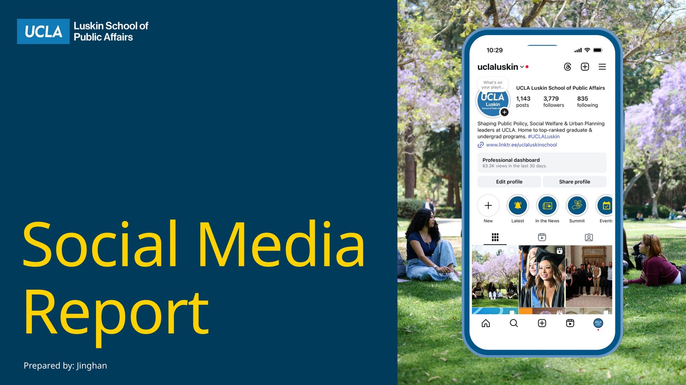
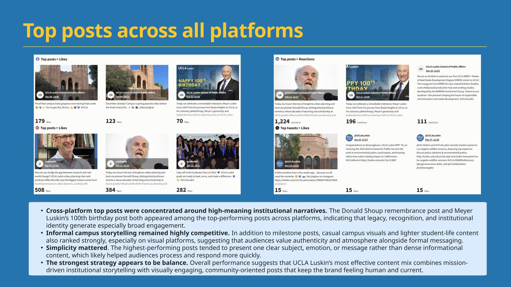
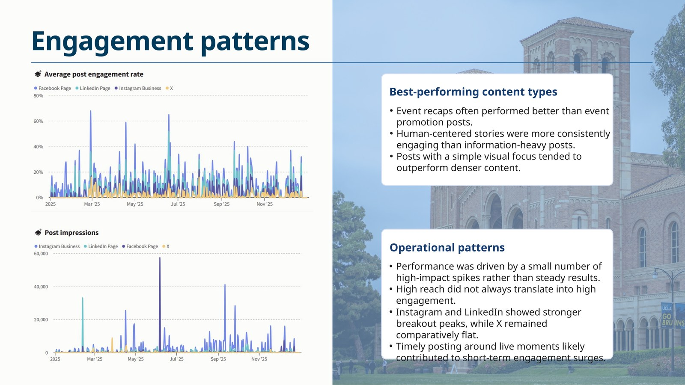
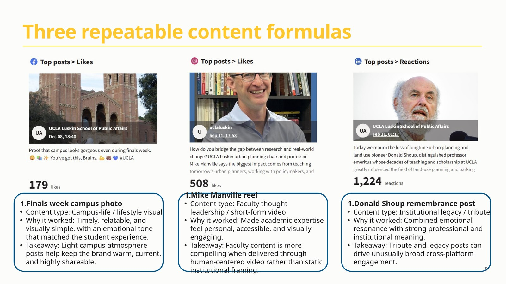
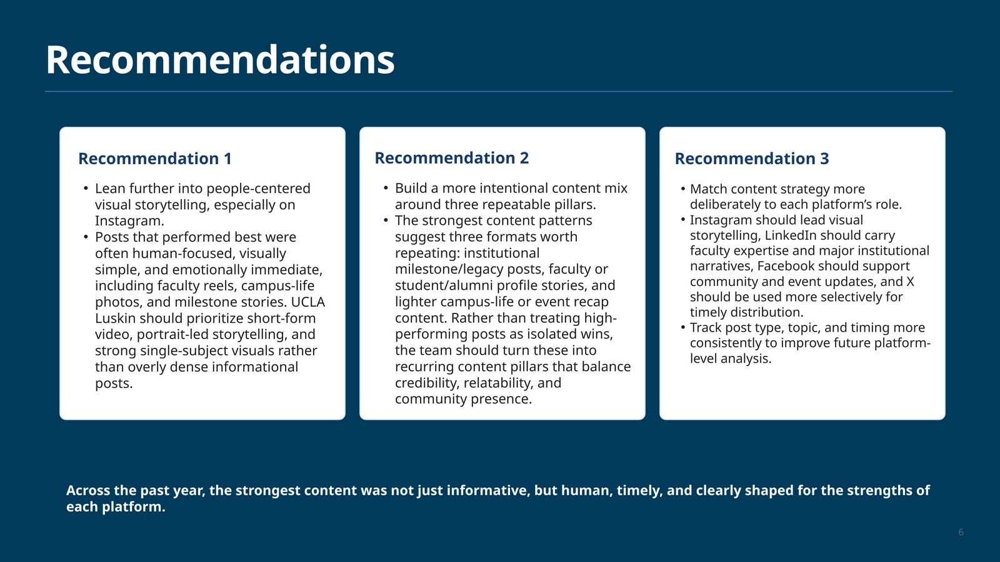

Social media strategy
Social Media Analytics Report
A platform-level analysis translating engagement data into practical recommendations for public affairs content strategy, including content pillars, platform roles, and human-centered storytelling patterns.

- RoleReport creator
- ScopeCross-platform performance review, content pattern analysis, and recommendations
- PlatformsInstagram, LinkedIn, X, and Facebook
- OutputSlide report for content strategy planning
Selected visuals
Inside the work




